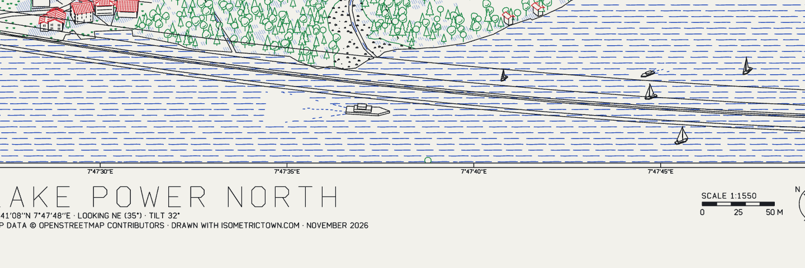
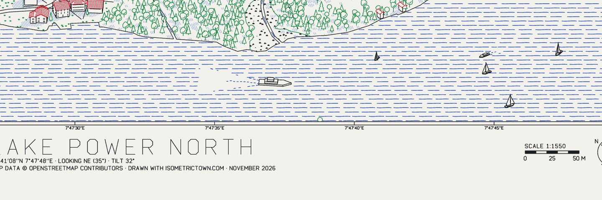

Original review · 15 November 2026
The long wires in the lakeshore screenshot were reproduced near 46.68556° N, 7.79667° E at 1:1550, bearing 35°, using the screenshot’s coordinate grid. The original transmission generator skipped obstruction checks for off-sheet pylons, and could connect past rejected supports. A small pan therefore changed whether those same foundations were tested against water.


Complete geometry from already loaded tiles is retained for power checks: land polygons, water, streams, buildings, roads and airfields. These checks operate in map coordinates, including off-sheet supports. Transmission needs positive mapped land beneath both supports and the full conductor corridor. Water, buildings, airfields and unknown land reject the route. Corridors are sampled at one-metre intervals along the centre and conductor extents.
Rejected supports now break the run instead of being skipped over. Transmission pylons are emitted only as part of an accepted adjacent span. Roadside wires also require adjacent valid poles and a clear corridor, and use the complete loaded road geometry and density context rather than view-filtered geometry. No new network requests are introduced.
Five regression tests cover unknown land, off-sheet water, land endpoints separated by a lake, narrow streams, buildings, shared-interior pan stability for transmission and roadside lines, and rejected roadside poles. The reproduced lakeshore view and two nearby views were rendered before and after. Named LOD comparisons also cover Mollis, Emmental and Hallstatt at 1:1000. The lakeshore regression is now available as lake-power in the standard lab.
Reviewed the lakeshore close-ups and changed golden sheets. Only Hallstatt, Midtown and Emmental goldens change, confined to power strokes and plot/SVG summaries. Other feature totals and scene counts remain unchanged. Build and all 619 tests pass.
Lakeshore before · Lakeshore after · Other LOD comparisons (local generated files).
The input tiles still contain no actual power-line routes. These remain conservative artistic inferences, not confirmed utilities. Genuine lake crossings are deliberately omitted. Missing land evidence also omits a candidate; changes in available map coverage can still affect candidates at the edge of that coverage. No exhaustive pan sweep or physical print was checked.